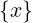
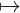
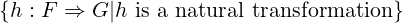
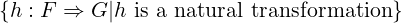
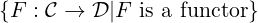
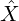
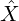

a composition rule:
Hom𝒞(Y,Z) × Hom𝒞(X,Y ) → Hom𝒞(X,Z)
(g,f)
 g ∘ f
g ∘ f
Category Theory Course Notes
Ettore Forigo
A category (1-category) 𝒞 consists of:
1 - A class Ob(𝒞) of objects of 𝒞
2 - ∀X,Y ∈ Ob(𝒞).
a class Hom𝒞(X,Y ) of morphisms from X to Y
3 - ∀X ∈ Ob(𝒞).
an identity morphism idX ∈ Hom𝒞(X,X)
4 - ∀X,Y,Z ∈ Ob(𝒞).
a composition rule:
Hom𝒞(Y,Z) × Hom𝒞(X,Y ) → Hom𝒞(X,Z)
(g,f)g ∘ f
Such that it satisfies the following axioms:
1 - Associativity of composition:
∀X,Y,Z,W ∈ Ob(𝒞).
∀f ∈ Hom𝒞(X,Y ),g ∈ Hom𝒞(Y,Z),h ∈ Hom𝒞(Z,W).
h ∘ (g ∘ f) = (h ∘ g) ∘ f
2 - Neutrality:
∀X,Y ∈ Ob(𝒞).
∀f ∈ Hom𝒞(X,Y ).
idY ∘ f = f ∧ f ∘ idX = f
A category is thin if parallel morphisms are always the same, meaning that there
is only one morphism between two objects.
In a thin category all morphisms are monic and epic.
An object I of a category 𝒞 is initial (dual of terminal, special case of a colimit
(of a functor from 𝒞 to the empty category))
⇕
∀X ∈ Ob(𝒞).
∃!f ∈ Hom𝒞(I,X)
An object T of a category 𝒞 is terminal (dual of initial, special case of limit (of
a functor from the empty category to 𝒞))
⇕
∀X ∈ Ob(𝒞).
∃!f ∈ Hom𝒞(X,T)
A morphism f : X → Y in a category 𝒞 (f ∈ Hom𝒞(X,Y )) is a monomorphism
(or monic in 𝒞) (dual of epimorphism)
⇕
∀Z ∈ Ob(𝒞).∀p,q ∈ Hom𝒞(Z,X).
f ∘ p = f ∘ q  p = q
p = q
Example:
In Set monomorphisms are precisely the injective maps.
Monomorphisms “can be cancelled” from the left.
A split monomorphism (dual of split epi) is a morphism f : X → Y such that
there exists a morphism g : Y → X such that:
g ∘ f = idX
Proposition: every split mono is a mono.
Proposition: in Set, every mono f : X → Y where X is inhabited is a split mono,
assuming LEM holds.
A morphism f : X → Y in a category 𝒞 (f ∈ Hom𝒞(X,Y )) is an epimorphism
(or epic in 𝒞) (dual of monomorphism)
⇕
∀Z ∈ Ob(𝒞).∀p,q ∈ Hom𝒞(Y,Z).
p ∘ f = q ∘ f  p = q
p = q
Example:
In Set epimorphisms are precisely the surjective maps.
Epimorphisms “can be cancelled” from the right.
A split epimorphism (dual of split mono) is a morphism f : X → Y such that
there exists a morphism g : Y → X such that:
f ∘ g = idY
Proposition: every split epi is an epi.
Proposition: in Set, every epi is a split epi ⇐⇒ assuming LEM holds.
A morphism f : X → Y in a category 𝒞 (f ∈ Hom𝒞(X,Y )) is an isomorphism
⇕
∃g ∈ Hom𝒞(Y,X).
f ∘ g = idY ∧ g ∘ f = idX
idX∀X ∈ Ob(𝒞) is always an isomorphisms for every category 𝒞.
Objects X and Y in a category 𝒞 are isomorphic
⇕
there exists an isomorphism between X and Y (X Y )
Y )
In Set, if there exists an isomorphism between X and Y , X and Y are called eqinumerous.
“The mother of all dualities”
Let 𝒞 be a category. Then its opposite category 𝒞op is the following category:
- Ob(𝒞op) : = Ob(𝒞)
- Hom𝒞op(X,Y ) : = Hom𝒞(Y,X)
- identities and composition inherited from 𝒞
idX ∈ Hom𝒞(X,X) = idXop ∈ Hom𝒞op(X,X)
f ∘ g : = gop ∘ fop
Observations / Remarks:
- An object I of 𝒞 is initial in 𝒞
⇕
I is terminal when regarded as an object of 𝒞op
- A morphism in 𝒞 is a monomorphism
⇕
it is an epimorphism in 𝒞op
A product (special case of limit) of two objects X and Y in a category 𝒞
consists of:
- an object P of 𝒞
- a morphism πX : P → X in 𝒞
- a morphism πY : P → Y in 𝒞
such that for every object Q of 𝒞 together with morphisms φX : Q → X,φY : Q → Y
there is exactly one morphism Q → P such that the following diagram commutes:
φX = πX∘!
φY = πY ∘!
Remarks:
- Products are always associative and commutative up to isomorphism.
- There is also the notion of the (co) product of zero, one, three, four, ... objects.
- The zero case of a product is just a terminal object, an object with exactly one morphism from each object.
A coproduct (special case of colimits) of two objects X and Y in a category 𝒞
consists of:
- an object C of 𝒞
- a morphism ιX : X → C in 𝒞
- a morphism ιY : Y → C in 𝒞
such that for every object D of 𝒞 together with morphisms χX : X → D,χY : Y → D
there is exactly one morphism C → D which renders the following diagram
commutative:
χX =! ∘ ιX
χY =! ∘ ιY
Remarks:
- Products in 𝒞op are precisely coproducts in 𝒞
- The zero case of a coproduct is the same as an initial object.
A (covariant) functor F : 𝒞→𝒟 from a category 𝒞 to a category 𝒟 consists of:
- an object F(X) ∈ Ob(𝒟) for each object X ∈ Ob(𝒞)
- a morphism F(f) : F(X) → F(Y ) in 𝒟 for each morphism f : X → Y in 𝒞
such that:
- ∀X ∈ Ob(𝒞).F(idX) = idF(X)
- ∀X,Y,Z ∈ Ob(𝒞).∀f : X → Y ∈𝒞,g : Y → Z in 𝒞.F(g ∘ f) = F(g) ∘ F(f)
Motto:
Functors ℐ→𝒞 are ℐ-shaped diagrams in 𝒞
A contravariant functor 𝒞→𝒟 is a covariant functor 𝒞op →𝒟
The discrete category associated with a set X, written 𝒟(X), is a category containing all the objects of X as objects, and no morphisms between different objects, just the identity morphisms.
Claim:
Any map between sets can be turned into a functor.
Let f : X → Y be a map between sets.
Consider the discrete categories 𝒟(X),𝒟(Y ).
Then f induces the following functor 𝒟(X) → D(Y ):
xf(x)
idx idf(x)
idf(x)
A functor F : 𝒞→𝒟 is essentially surjective iff:
∀Y ∈ Ob(𝒟).∃X ∈ Ob(𝒞)|F(X)Y
A functor F : 𝒞→𝒟 is faithful iff:
∀X,Y ∈ Ob(𝒞).
∀f,g : X → Y in 𝒞
F(f) = F(g)  f = g
f = g
Reformulation: iff
∀X,Y ∈ Ob(𝒞).
Hom𝒞(X,Y ) → Hom𝒟(F(X),F(Y ))
f F(f)
F(f)
is injective.
A functor F : 𝒞→𝒟 is full iff:
∀X,Y ∈ Ob(𝒞).
∀g : F(X) → F(Y ) in 𝒟
∃f : X → Y in 𝒞|F(f) = g
Reformulation: iff
∀X,Y ∈ Ob(𝒞).
Hom𝒞(X,Y ) → Hom𝒟(F(X),F(Y ))
f F(f)
F(f)
is surjective.
A functor is fully faithful iff it is full and faithful.
Reformulation: iff
∀X,Y ∈ Ob(𝒞).
Hom𝒞(X,Y ) → Hom𝒟(F(X),F(Y ))
f F(f)
F(f)
is bijective.
An elementary equivalence is a fully faithful, essentially surjective functor.
Categories are called equivalent iff there is an elementary equivalence between
them.
Remark: Equivalent categories have exactly the same categorical properties.
A natural transformation η : F ⇒ G between two functors F,G : C → D
consists of:
- for each object X ∈ Ob(𝒞) a morphism ηX : F(X) → G(X) in 𝒟
such that for all morphisms f : X → Y in 𝒞, the naturality square commutes:
G(f) ∘ ηX = ηY ∘ F(f)
Motto:
Natural transformations are uniform families of morphisms.
Let 𝒞,𝒟 be categories.
The functor category [𝒞,𝒟] has:
- as objects: all functors 𝒞→𝒟
- as morphisms: Hom[𝒞,𝒟](F,G) : = 
- as identity: for the object F, the identity idF : F ⇒ F (idF )X : F(X) → F(X)
given by idF(X)
- as composition rule:
(ω ∘ η)X : = ωX ∘ ηX
ωX : G(X) → H(X)
ηX : F(X) → G(X)
and ω ∘ η should be natural.
A category 𝒞 is small when Ob(𝒞) is just a set and not a proper class.
The 1-category of 1-categories, Cat has:
- as objects: all categories
- as morphisms: HomCat(𝒞,𝒟) : = 
- as identities IdF (the identity functor?)
- as composition rule:
F : 𝒞→𝒟
G : 𝒟→ E
G ∘ F : 𝒞→ E
X G(F(X))
G(F(X))
f G(F(f))
G(F(f))
There are two issues with this definition:
- Size issue (in ZFC). (it’s too big, the objects don’t fit in a proper class?)
Remedies:
- just consider the category of small categories
- switch foundations
- It ignores natural transformations
Remedy:
Consider the 2-category of 1-categories
The 2-category of 1-categories has:
- as objects: all 1-categories
- as morphisms: functors
- as -2-morphisms / 2-cells: natural transformations
A cone of a diagram (functor) F : ℐ →𝒞 in a category 𝒞 consists of:
- an object A of 𝒞 (the ”tip” of the cone)
- for each object X ∈ Ob(𝒞), a morphism πX : A → F(X)
such that for all morphisms f : X → Y in ℐ, the triangle:
πY = πX ∘ F(f)
commutes.
A cocone of a diagram (functor) F : ℐ→𝒞 in a category 𝒞 consists of:
- an object A of 𝒞 (the ”tip” of the cocone)
- for each object X ∈ Ob(𝒞), a morphism πX : F(X) → A
such that for all morphisms f : X → Y in ℐ, the triangle:
πX = πY ∘ F(f)
commutes.
A morphism between a cone (A,(πX)X) and a further cone (B,(ϕX)X) of a
diagram F : ℐ →𝒞 consists of a morphism f : A → B in 𝒞 such that:
πX = πY ∘ f
A limit of a diagram F : ℐ→𝒞 is a terminal cone of F, that is, a terminal object in the category of of cones of cones of F.
A colimit of a diagram F : ℐ→𝒞 is an initial cocone of F.
Let f,g : X → Y . Then the equalizer of f and g is the following function:
Eq(f,g) = x ∈ X|f(x) = g(x)
A small diagram in 𝒞 is a diagram ℐ→𝒞 where ℐ is a small category.
A category 𝒞 is complete iff every small diagram in 𝒞 has a limit (it has all small limits).
A category 𝒞 is cocomplete iff every small diagram in 𝒞 has a colimit (it has all
small colimits).
𝒞 complete ⇐⇒𝒞op cocomplete.
A presheaf (plural presheaves) on a category 𝒞 is a functor 𝒞op → Set
Motto:
we picture a presheaf F on 𝒞 as an “ideal, fictional, object of 𝒞” in that we know
its relation to actual objects of 𝒞

 (X hat) is a presheaf:
𝒞op → Set
THom𝒞(T,X)
A presheaf F : 𝒞op → Set is representable iff:
∃X ∈ Ob(𝒞) : F 
